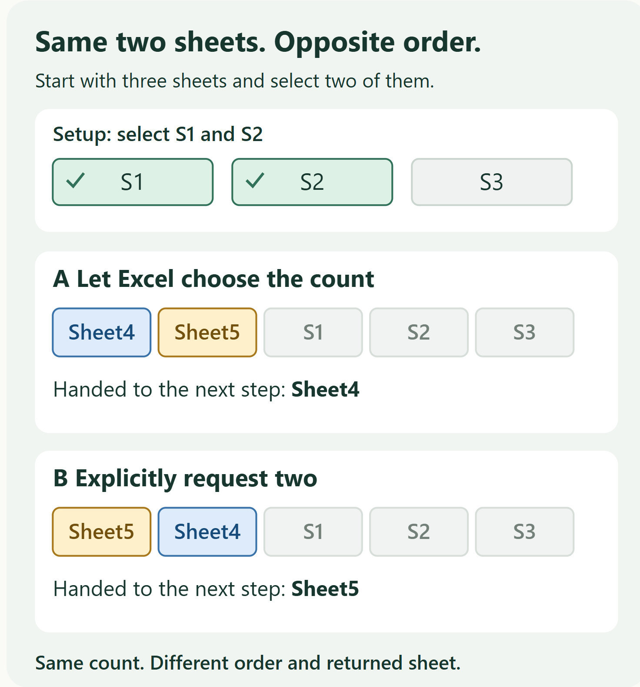

Oxi field notes3 minute read
How You Ask Excel for Two Sheets Can Change Their Order
“Add two sheets to this Excel workbook.”
If the same number of sheets appears, it sounds like the same operation. But we found a case where letting Excel choose the number and explicitly asking for two produced the opposite sheet order.
The difference went further: Excel also handed a different sheet back to the automation that requested it.

Diagram of results recorded in real Excel. This is not an Excel screenshot.
We found this while developing Oxi, an open-source project for working with Office documents in browsers and other applications. As we build support for Excel automation, we compare its behavior with real Excel.
Two ways to ask the same Excel
For this experiment, we added sheets through a macro, a small program that automates Excel tasks.
We started with a workbook containing three sheets and selected two of them. Then we compared two requests:
- Leave the number unspecified and let Excel choose.
- Explicitly request two sheets.
In the environment we tested, both requests added two sheets. Excel named them “Sheet4” and “Sheet5.”
But the results differed:
| Request | New sheet order, from left to right | Sheet handed back to the macro |
|---|---|---|
| Let Excel choose the number | Sheet4 → Sheet5 | Sheet4 |
| Explicitly request two | Sheet5 → Sheet4 | Sheet5 |
Repeating the experiment under the same conditions reproduced the difference.
Counting the new sheets misses part of the result
Someone working on screen might notice the order and rearrange the sheets.
For an automated process, the difference can affect what happens next. Imagine a macro that adds a sheet and then writes a sales report into the sheet returned by that operation. If Excel hands back a different sheet, the target of that next step changes too.
A check that asks only “Did two sheets appear?” would miss this. We had to examine their order and the sheet returned to the macro to see the distinction.
The decisions Excel makes when we leave something out
Excel lets us perform many tasks without specifying every detail. In this example, omitting the number made Excel use the number of selected sheets.
Most users never need to think about that decision. Reproducing the behavior in another application means investigating it.
How many sheets appear? In what order? Which one does the next step receive? A short operation contained several separate decisions.
At Oxi, we compare those details with real Excel and work through the differences. Full Excel compatibility remains in development.
Observed on 64-bit Excel 16.0, build 20527.0, on Windows with a Japanese-language environment. The sheet names shown are those from our test workbook.
Measurements and references
The order and returned sheet shown here were reproduced in real Excel under the same conditions.
The official API page describes the default Count as one. This article reports what we observed with two sheets selected.
Presentation references
We took inspiration from showing an example early and explaining a visual one step at a time. The diagrams and prose here were created for this article.